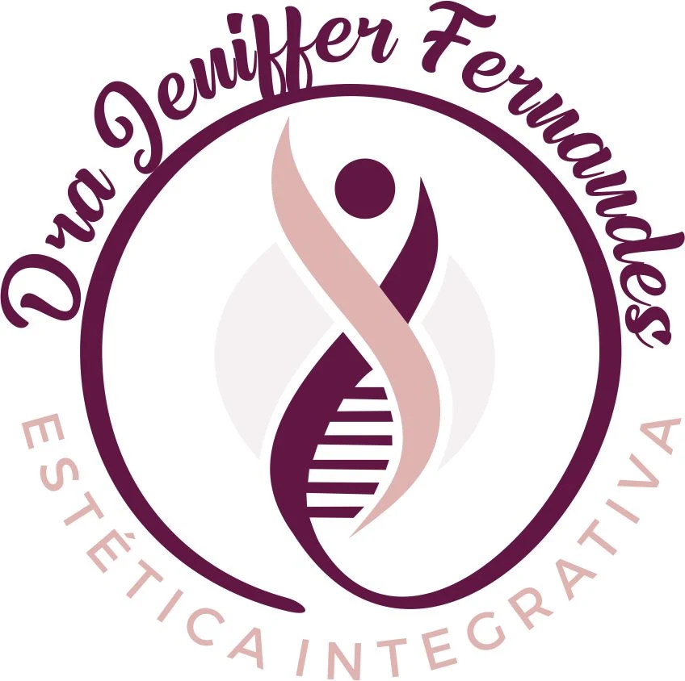
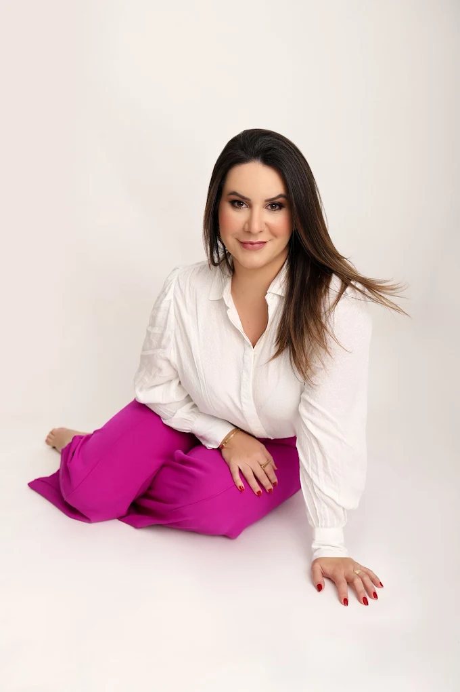
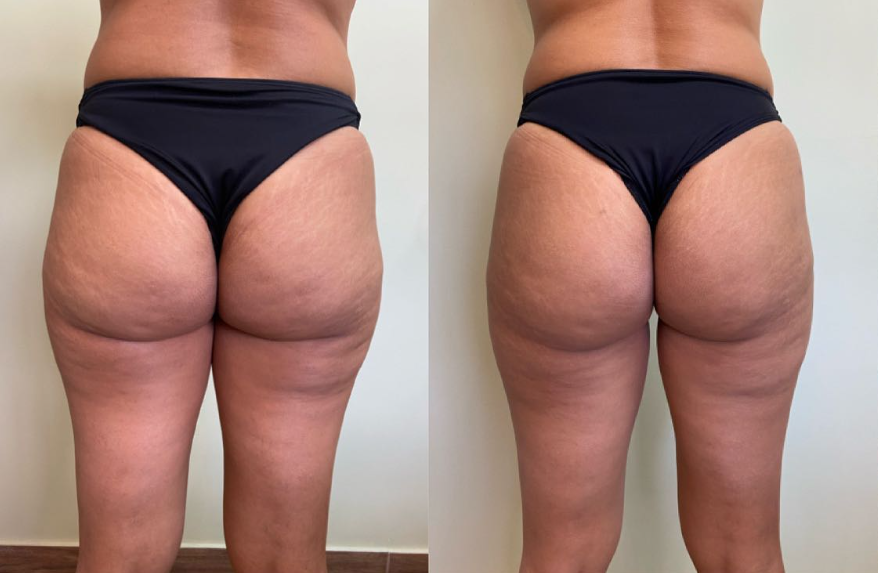
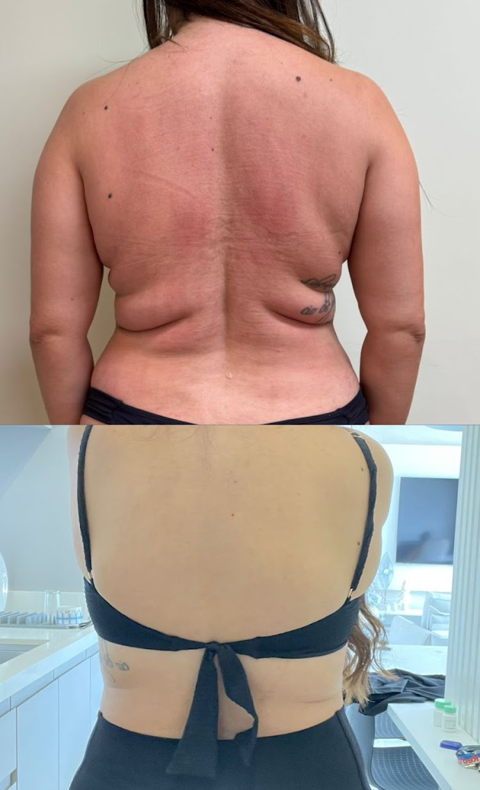
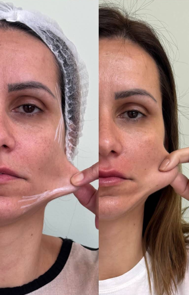
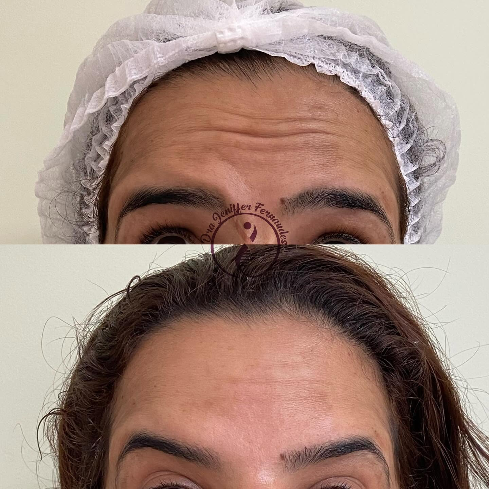
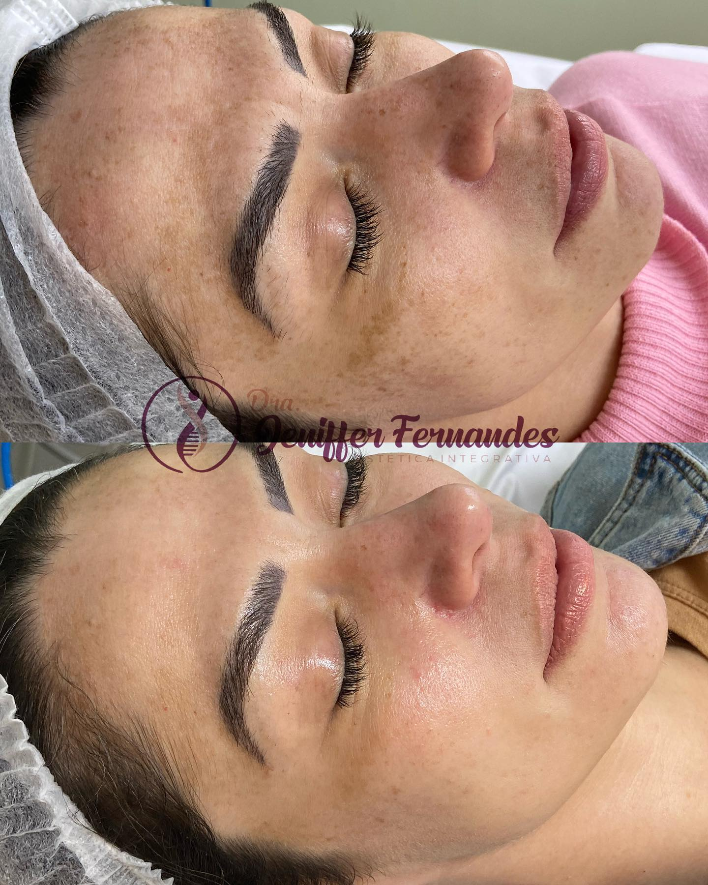
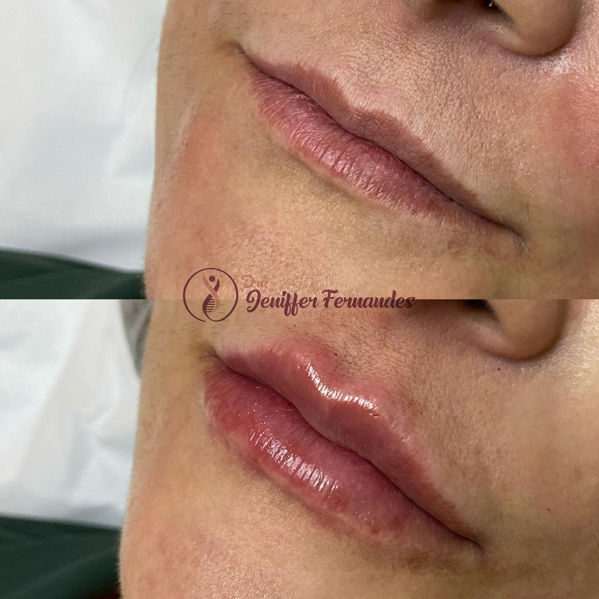

Protocolos personalizados em Biomedicina Estética e Terapias Ortomoleculares no Tatuapé. Rejuvenescimento com naturalidade, segurança médica e elegância.

Biomédica Esteta & Especialista em Terapias Ortomoleculares
Com anos de prática clínica dedicada à valorização da beleza autêntica, a Dra. Jeniffer Fernandes une rigor científico, biotecnologia e sensibilidade estética. Seu consultório no Tatuapé foi projetado para oferecer uma experiência acolhedora, segura e com resultados visivelmente refinados — sem exageros, respeitando cada traço da sua identidade.
Tratamento de dentro para fora para máxima durabilidade celular.
Cada anatomia recebe um mapeamento detalhado e personalizado.
Equipamentos e bioestimuladores de última geração com registro Anvisa.

Corporal AvançadoFirmeza, volumização natural e remodelação dos glúteos com bioestimuladores de colágeno e tecnologia muscular profunda.

Lipoaspiração Não-CirúrgicaRedução precisa de gordura localizada (papada, abdômen, flancos) aliada à retração imediata da pele por laser/cânula térmica.

Rejuvenescimento & FirmezaReposicionamento tecidual e estímulo biológico intenso de colágeno. Efeito lifting sem cortes, com textura luminosa e viço imediato.

Face & ExpressãoSuavização de linhas de expressão na testa, glabela e pés de galinha, preservando movimentação natural e prevenindo rugas estáticas.

Saúde da Pele & GlowClareamento seguro e controle de pigmentação celular através de peelings biocompatíveis, drug delivery e terapias ortomoleculares.

Contorno & SimetriaEscultura labial com ácido hialurônico de alta pureza e definição dos contornos faciais (mandíbula, malar e mento) com proporção áurea.
"Fiz o BioLift e o resultado foi inacreditável! Minha pele rejuvenesceu 5 anos mantendo total naturalidade. O consultório no Tatuapé é impecável!"
"A Dra. Jeniffer tem mãos de fada para o Botox e preenchimento labial. Não fico mais sem. Atendimento cinco estrelas!"
"O protocolo de Endolipo na papada mudou minha autoestima por completo. Recomendo de olhos fechados."
Rua Coronel Carlos Oliva, 92 – Tatuapé, São Paulo - SP
(Próximo à estação Tatuapé do Metrô)
Terça a Sexta: 10h às 19h
Sábado: 09h às 15h